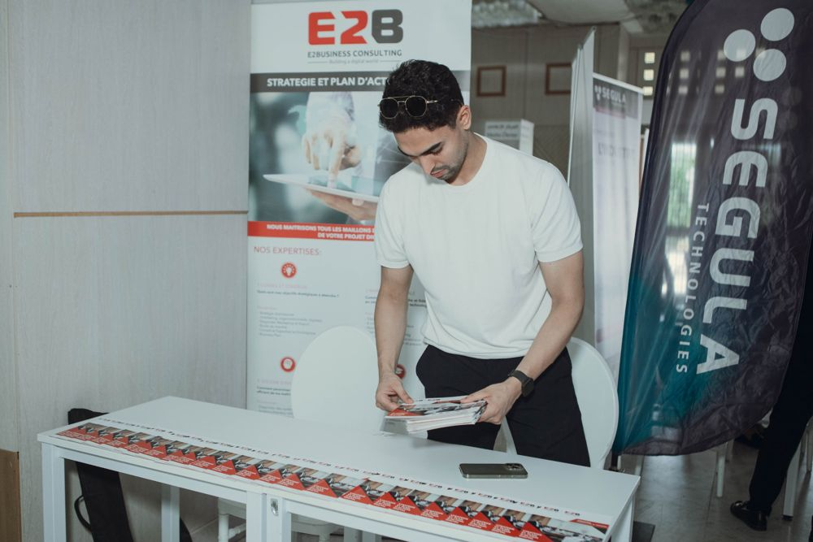
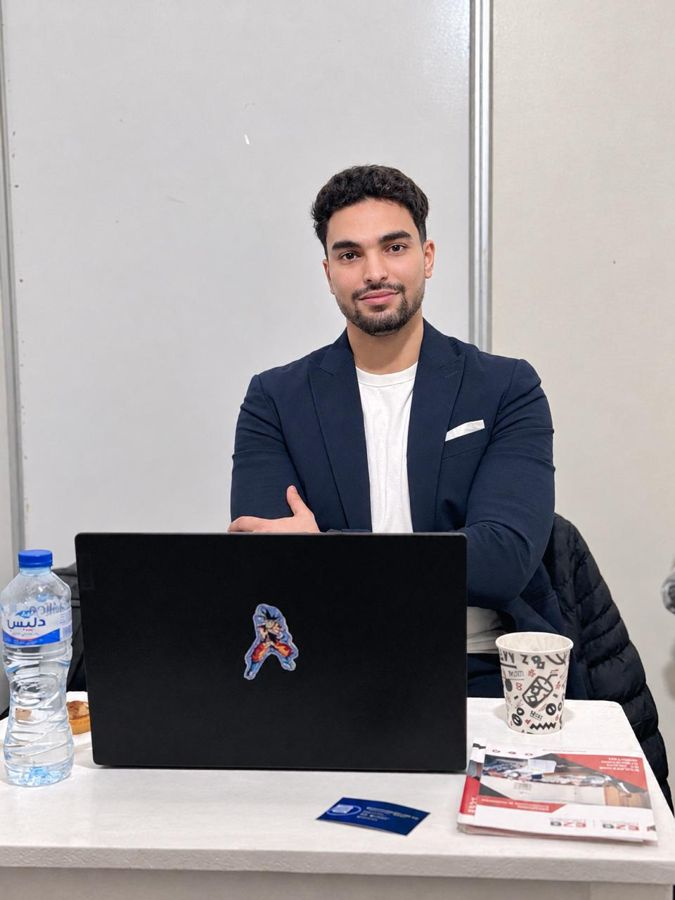

SEO
Technical audit, keywords, optimized content, internal linking and tracking with Search Console.
Let’s talk ↗
Projects delivered for
About
I am Ayoub Yatouji, an SEO consultant and digital marketing professional with a professional Master’s degree in Distribution, Negotiation and Digital Commerce.
At E2B Consulting & Training, I developed an approach to SEO that combines technical analysis, an understanding of search intent, editorial strategy and performance tracking.
I also follow how artificial intelligence and GEO (Generative Engine Optimization) are changing online search.
Services
Attract visitors, convert them and save time: three levers I know how to connect.
Technical audit, keywords, optimized content, internal linking and tracking with Search Console.
Let’s talk ↗Facebook and Instagram campaigns: targeting, creatives, testing and cost-per-result optimization.
Let’s talk ↗Google search campaigns and B2B LinkedIn campaigns: keywords, targeting by role and industry, conversion tracking.
Let’s talk ↗n8n workflows, Python tools and AI agents: SEO and advertising reports, alerts, content production.
Let’s talk ↗Background
École Supérieure de Commerce de Tunis (ESCT)
ESCT – University of La Manouba
E2B Consulting & Training: SEO, content and final-year project
First Master Class
In the field
I represented E2B, now i2business.ai, in front of visitors, students and professionals.
E2B stand at an event organized by the Arab University of Sciences.
Representing E2B at the school’s Job Fair: conversations with students and recruiters.
Hôtel Royal Hammamet. Representing i2business.ai alongside Mr. Mohamed Kais Khenine, around HR, innovation and digital transformation.
Welcoming visitors, presenting consulting, training and automation solutions, and discussing professional needs.

Representing E2B at the school Job Fair: presenting the company culture and answering questions about careers in marketing and digital.

Representing i2business.ai alongside Mr. Mohamed Kais Khenine, with a focus on AI, human resources and digital transformation.

Skills
From audit to optimization, every action serves a clear goal: improving visibility and the search experience.
Audits, crawling, indexing, performance, Core Web Vitals and fixing technical issues.
Keyword research, search intent, page optimization and internal linking.
Organic performance tracking, opportunity analysis and data-driven recommendations.
Using AI tools in SEO workflows and thinking about visibility in generative engines.
Google Search Console · Google Analytics 4 · Screaming Frog · Ahrefs · Meta Ads · Meta Business Suite · Google Ads · LinkedIn Ads · SEMrush · SurferSEO · Frase · Claude · Perplexity · WordPress
Method
Technical and editorial audit to spot what holds visibility back: crawling, indexing, content, competitors.
Keyword research, search intent and a structure of clusters and pillar pages.
Optimized content, service pages, and Meta, Google and LinkedIn Ads campaigns launched and continuously improved.
n8n workflows and Python tools connected to Search Console to remove repetitive tasks.
Tracking clicks, conversions and cost per result, then clear reports to decide what comes next.
Packages
Three packages tailored to your project. Every price is set by quote.
SEO and advertising review: what works, what blocks growth, and the priorities.
Request a quote ↗Ongoing SEO and campaign monitoring and optimization, with a monthly report.
Request a quote ↗Setting up Meta, Google or LinkedIn campaigns: targeting, ads and conversion tracking.
Request a quote ↗Projects
SEO and automation projects carried out at E2B Consulting & Training and for client websites.
Structuring and migrating the new website: bachelor and master programmes, academic pathways, training sheets and institutional information.
Complete SEO strategy and automation system for kenzastihl.com: technical audit, rank tracking, backlinks, content, site health and automated reporting.
SEO internship at the company now known as i2business.ai: website content updates, new page creation, on-page optimization, keyword research and content structure improvements.
B2B content strategy for the North American market: 35 pages organized into 6 semantic clusters, using an editorial approach focused on E-E-A-T.
Case study
Between October and December 2025, clicks fell from 6,340 to 4,870 and the average position went from 8.4 to 10.4, partly because of seasonality. Audits, content and reports were done by hand.
Daily technical monitoring, rank tracking, content optimized with AI skills and an automatic monthly report: 16 n8n workflows and a Python tool connected to Search Console.
From February to March 2026: +30.6% clicks, +27.7% impressions and an average position from 9.9 to 8.7. Writing a product sheet: −85% time. Monthly report: −95%.
Final-year project
DNCD Master’s, ESCT – University of La Manouba, 2025/2026. Design and deployment of an AI agent for kenzastihl.com, carried out at E2B Consulting & Training.
Technical monitoring, rank tracking via SerpAPI, content generation with the Claude API and automatic reporting.
Specialized skills for recurring SEO tasks: content, audits and analyses.
kenza-seo-tool generates the monthly reports from the Google Search Console API.
Measured results, February → March 2026
Automation
Estimate the time you spend each month on reports (SEO, Meta, Google or LinkedIn Ads).
Estimate based on the 95% reduction observed on a monthly SEO report (3-4 h to under 2 min). Actual savings depend on your reports.
Proof
Search Console data, compared between two periods.
February 2026 → March 2026
September 2025 → October 2025
Blog
A space to share analyses, methods and lessons learned about SEO and digital marketing.
Understanding a site’s technical and editorial state before setting optimization priorities.
Read the article (in French) ↗Structuring content around user needs and making it easy to move between pages.
Read the article (in French) ↗Exploring the links between classic SEO, content quality and generative search engines.
Read the article (in French) ↗Free resource
A one-page PDF to tick off before launching or relaunching your campaigns: SEO, Meta Ads, Google Ads, LinkedIn Ads and automation.
Quick test
Three questions for a first orientation. This is not a full media plan.
Quick test
Eight questions, one minute. Answer honestly.
FAQ
Usually from a few weeks to several months, depending on the site and competition. Nobody can guarantee a ranking. On kenzastihl.com I measured a rise in clicks within a month, but every site is different.
SEO is slower but lasting. Advertising is fast but stops with the budget. The most effective approach is often to combine them: ads quickly test what works, SEO consolidates it.
Google Ads reaches people already searching for your product. Meta Ads (Facebook and Instagram) suits awareness and visual products. LinkedIn Ads targets B2B decision makers, with a higher cost per click.
It depends on the goal and the industry. I recommend starting with a test budget, measuring the cost per result, then increasing what works.
SEO and advertising reports, rank tracking, technical monitoring, alerts and part of content production. On one project, a monthly report went from 3-4 hours to under 2 minutes.
Audit, strategy, execution, then follow-up with clear reports. Write to me by email or WhatsApp to define your needs.
Contact
Open to job opportunities, collaborations and SEO projects.